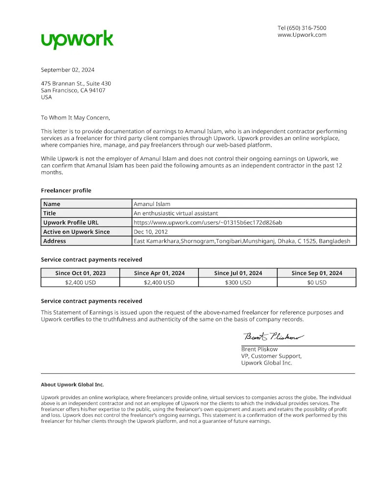

Honors & Awards
Mentored Doctoral Fellowship
Issued by: University of Colorado Colorado Springs · April 2025
I was awarded the Mentored Doctoral Fellowship in recognition of my outstanding research contributions and potential in cybersecurity research.
Merit Scholarship
Issued by: The Millennium University · October 2007
Awarded a full tuition waiver for four years in recognition of academic excellence and consistent high performance throughout the undergraduate program.
Freelance Recognition
Certificate of Freelance Earnings
Before starting my PhD in Security at UCCS in Fall 2024, I worked as a freelancer on Upwork. This certificate from Upwork Global Inc. confirms my earnings as an independent contractor, providing virtual and technical services. From October 2023 to July 2024, I earned $2,400 USD, reflecting my professionalism and reliability. Freelancing strengthened my skills and prepared me for research. I ended freelancing to fully focus on my PhD in cybersecurity.

Virtual Assistant Experience
Role: Virtual Assistant (Part-time)
Company: Upwork · Sep 2022 – Jul 2024 · 1 yr 11 mos
Location: Remote · Palo Alto, California, United States
✅ 7 years of experience as a VA ✔️Academic & Business Research ✔️Website Development & Maintenance ✔️Social Media Management ✔️Email Management ✔️Project Management ✔️Schedule meetings ✔️Admin Tasks